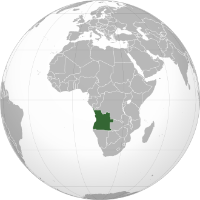

A República de Angola fica situada na costa ocidental da África.
A cultura de Angola é rica, diversa e profundamente influenciada por suas raízes africanas e pela colonização portuguesa. O país abriga mais de 90 grupos étnicos, sendo os principais os Ovimbundos, Kimbundos e Bacongos, cada um com línguas, tradições e costumes próprios.
A música e a dança são partes centrais da vida angolana, com ritmos populares como o Semba, o Kuduro e a Kizomba, que expressam tanto alegria quanto resistência. A língua oficial é o Português, mas muitas línguas africanas locais também são faladas.
A culinária de Angola é marcada pela diversidade de sabores e influências, resultado da mistura das tradições africanas com elementos da cozinha portuguesa. Os pratos angolanos costumam ser ricos em temperos e utilizam ingredientes locais como mandioca, milho, feijão, óleo de palma, peixe seco e diversas carnes.
Um dos alimentos mais consumidos é o funge, uma espécie de purê espesso feito com farinha de mandioca ou milho, que geralmente acompanha pratos como a Muamba de galinha, preparada com Óleo de Palma, Quiabo e especiarias. Outro prato tradicional é o Calulu, que combina peixe seco ou carne com vegetais e folhas.
A comida angolana é geralmente preparada de forma simples, mas com sabores fortes e autênticos, refletindo o dia a dia, a cultura e as tradições do povo. As refeições são momentos importantes de convívio familiar e comunitário, preservando a identidade cultural do país.
A população de Angola está projetada para ser de aproximadamente 38,9 milhões de habitantes em 2025. Católicos (cerca de 40%), Protestantes e evangélicos (cerca de 30-35%).
A população de Angola é etnicamente diversa, sendo composta por vários grupos africanos, com destaque para:
- Ovimbundu (~37%): maior grupo étnico, concentrado no centro-sul do país.
- Ambundu (ou Mbundu) (~25%): vivem principalmente nas regiões centrais e ao redor de Luanda.
- Bakongo (~13%): vivem no noroeste do país, especialmente nas províncias próximas à fronteira com o Congo.
- Outros grupos étnicos (~22%): incluem Chokwe, Lunda, Nhaneca, Herero, e outros grupos menores.
Os vestimentos em Angola refletem a diversidade cultural do país, combinando tradições africanas com influências modernas. Em muitas regiões, especialmente nas áreas rurais, ainda são usados trajes tradicionais coloridos, feitos com panos africanos como o samacaca, que possuem padrões e significados simbólicos.
As mulheres costumam usar vestidos longos, lenços na cabeça e acessórios artesanais, enquanto os homens podem vestir túnicas ou roupas com tecidos típicos. Já nas cidades, a influência ocidental é mais forte, e as pessoas geralmente usam roupas modernas, como calças jeans, camisas e vestidos no estilo europeu.
No entanto, em festas, cerimônias e datas comemorativas, os trajes tradicionais ganham destaque, reforçando o orgulho pelas raízes culturais angolanas.